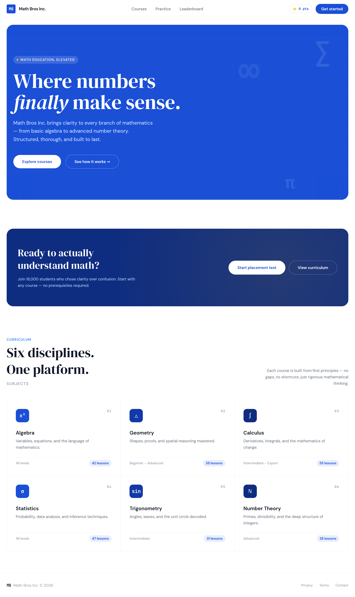
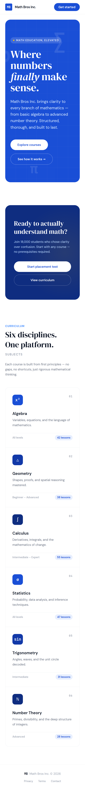

2. Home

The busiest screen in the app, and the one that sets the tone. Five bands, top to bottom: a nav bar, the blue hero, the navy call to action, the six subjects, and a footer. Build them in that order, as five things stacked down a ColumnPanel, and run after each one.
On a phone the same screen stacks: the six subjects become a single column and the two hero buttons wrap. That is what an Anvil ColumnPanel does by itself, so the phone version costs you nothing.

The nav bar
One row of a ColumnPanel with three things on it, side by side. Drag the second and third next to the first rather than under it, and Anvil puts them in one row.
| Name | Type | Text | Look |
|---|---|---|---|
lbl_brand | Label | Math Bros Inc. | bold, 15, foreground On Surface. Optional: an icon of fa:square in Primary in front, standing in for the "MB" square. |
fp_nav | FlowPanel | in the middle, holding the two links | |
lnk_practice | Link, inside fp_nav | Practice | foreground #6b7280, 14 |
lnk_leaderboard | Link, inside fp_nav | Leaderboard | foreground #6b7280, 14 |
fp_nav_right | FlowPanel | align right, holding the next two | |
lbl_points | Label, inside fp_nav_right | ⭐ 0 pts | role mono and chip, foreground Primary, 12 |
btn_get_started | Button, inside fp_nav_right | Get started | role pill, background Primary, foreground On Primary, 14 |
Under it, the design has a one pixel line the colour of the card border. A Spacer of height 1 with background #f3f4f6 does it, or skip it.
The design also has a Courses link. It goes nowhere in the Figma. Leave it off; page 7 says why.
The blue hero
A ColumnPanel called card_hero, role panel, background Primary. Everything inside it is white text.
| Name | Type | Text | Look |
|---|---|---|---|
lbl_hero_eyebrow | Label | MATH EDUCATION, ELEVATED | role eyebrow, foreground On Primary, 12. Optional: icon fa:circle in #f5b800 for the yellow dot. |
lbl_hero_headline | Label | Where numbers finally make sense. | role display, foreground On Primary, 64 |
lbl_hero_text | Label | Math Bros Inc. brings clarity to every branch of mathematics, from basic algebra to advanced number theory. Structured, thorough, and built to last. | foreground #dbeafe, 18 |
fp_hero_buttons | FlowPanel | spacing large | |
btn_explore | Button, inside | Explore courses | role pill, background On Primary, foreground Primary |
btn_how | Button, inside | See how it works → | role pill-outline, foreground On Primary |
The word finally is in italic serif in the design. A Label is one font style all the way through, so either accept it upright, or make it three labels in a FlowPanel with the middle one italic. The first is fine. This is exactly the kind of five percent the README warns about.
The faint grid and the floating ∑, π and ∞ in the corners are decoration drawn with CSS. Skip them. Nobody will miss them and there is no component for them.
The navy call to action
A second ColumnPanel, card_cta, role panel, background Secondary (that is #0f2d80, the dark blue). The design puts the words on the left and the buttons on the right; on a ColumnPanel that means dropping fp_cta_buttons on to the same row as the text, or simply stacking them, which is what the phone does anyway.
| Name | Type | Text | Look |
|---|---|---|---|
lbl_cta_heading | Label | Ready to actually understand math? | role display, foreground On Primary, 36 |
lbl_cta_text | Label | Join 18,000 students who chose clarity over confusion. Start with any course, no prerequisites required. | foreground #bfdbfe, 14 |
fp_cta_buttons | FlowPanel | ||
btn_placement | Button, inside | Start placement test | role pill, background On Primary, foreground Primary |
btn_curriculum | Button, inside | View curriculum | role pill-outline, foreground On Primary |
btn_placement is the one that matters. It opens the placement test, and it is the only button on this screen that the Figma actually wires up. About the 18,000 students, see page 7.
The six subjects
| Name | Type | Text | Look |
|---|---|---|---|
lbl_curriculum | Label | CURRICULUM | role eyebrow, foreground #3b82f6 |
lbl_subjects_heading | Label | Six disciplines. One platform. | role display, foreground On Surface, 44 |
lbl_subjects_sub | Label | SUBJECTS | role eyebrow, foreground #9ca3af |
lbl_subjects_text | Label | Each course is built from first principles: no gaps, no shortcuts, just rigorous mathematical thinking. | foreground #6b7280, 14 |
rp_subjects | RepeatingPanel | item template SubjectRow, below |
The design lays the six out as a three by two grid. A RepeatingPanel stacks its rows in one column. So on a laptop your list will look like the phone picture rather than the grid, and that is the right call: it is one row form, designed once, and it is the same row form the Practice screen uses. If your team wants the grid badly, that is six copies of the row placed by hand, three to a line, and it stops being a list.
SubjectRow
The item template. Its own form, with a ColumnPanel called card_subject of role card holding everything.
| Name | Type | Text | Look |
|---|---|---|---|
fp_subject | FlowPanel | the top line | |
lbl_subject_icon | Label, inside | x² | role subject-icon, background Primary. Or just bold Primary text if you skip that role. |
lnk_subject | Link, inside | Algebra | bold, 18, foreground On Surface. Clicking it opens the quiz. |
lbl_subject_tag | Label, inside | 01 | role mono, foreground #9ca3af, align right |
lbl_subject_description | Label | Variables, equations, and the language of mathematics. | foreground #6b7280, 14 |
fp_subject_foot | FlowPanel | the bottom line | |
lbl_subject_level | Label, inside | All levels | foreground #9ca3af, 12 |
lbl_subject_lessons | Label, inside | 42 lessons | role chip, background Primary Container, foreground Primary, 12 |
In code, each row fills itself from its own row of data, which is Pattern 9:
self.lbl_subject_icon.text = self.item['icon']
self.lnk_subject.text = self.item['name']
self.lbl_subject_tag.text = self.item['tag']
self.lbl_subject_description.text = self.item['description']
self.lbl_subject_level.text = self.item['level_text']
self.lbl_subject_lessons.text = f"{self.item['lessons']:.0f} lessons"The :.0f is there because a Number column hands you 42.0, and "42.0 lessons" is the kind of thing nobody notices until a parent does.
The six subjects, exactly as the design has them, so you can type them into a table or a list:
| tag | icon | name | description | level_text | lessons |
|---|---|---|---|---|---|
| 01 | x² | Algebra | Variables, equations, and the language of mathematics. | All levels | 42 |
| 02 | △ | Geometry | Shapes, proofs, and spatial reasoning mastered. | Beginner to Advanced | 38 |
| 03 | ∫ | Calculus | Derivatives, integrals, and the mathematics of change. | Intermediate to Expert | 55 |
| 04 | σ | Statistics | Probability, data analysis, and inference techniques. | All levels | 47 |
| 05 | sin | Trigonometry | Angles, waves, and the unit circle decoded. | Intermediate | 31 |
| 06 | ℕ | Number Theory | Primes, divisibility, and the deep structure of integers. | Advanced | 28 |
The footer
| Name | Type | Text | Look |
|---|---|---|---|
lbl_footer | Label | MB Math Bros Inc. © 2026 | foreground #9ca3af, 14 |
The Privacy, Terms and Contact links go nowhere. Leave them off.
The three states
Empty. There is nothing empty on this screen; the six subjects are fixed. The points badge says ⭐ 0 pts for a brand new student, which is the design's own empty state and it is fine.
Wrong. Nothing to get wrong here. If your Home asks for a name before Practice or the leaderboard will work, the place the design does not have a message for is an empty name; an alert("Type your name first.") is the honest answer.
Full. A student with a lot of points: ⭐ 1,240 pts. The badge grows and the FlowPanel copes. The :, in f"⭐ {points:,.0f} pts" puts the comma in.
Test it
- Run it next to
01-home.png. Same five bands, same order. - The two buttons in the hero are white and blue; the two in the navy card are white and blue; the one in the nav is blue and white. Three pills, two looks.
- Make the window narrow. The subjects stack, the buttons wrap, nothing overflows sideways.
- Press Start placement test. Page 3.